ALKoG | five-seed grid comparison and frozen MuJoCo check
ALKoG research branch: experiment-spontaneous-grammar. Study date: 16 November 2026. Preserved working baseline: commit 8152d916323ac62e4ec9a31f1b8ae392ee77cb5f. This report covers a new grid study and a frozen transfer check in the existing MuJoCo arena. It does not replace the earlier fixed-role implementation.
The plain unassigned-slot neural protocol obtained 98.8% (seeds 97.9%-99.7%) on unseen two-object combinations, versus exactly 25% when blocked. A separate inventory-invariance method produced 408 held-out spatial-role pairs with identical symbol inventories but different order; 406 pairs were interpreted correctly in both directions. These are finite, order-sensitive learned codes. However, two seeds produced fewer than the required 50 matched pairs, so the method fails the preregistered five-seed order-binding criterion. The observed pairs support a narrow syntax-like property under an explicit learning bias, not human language.
There are substantial limits. Three-object performance for the strong two-object protocol was 55.1% (seeds 51.9%-56.5%); local symbolic substitutions did not meet the preregistered productivity criterion. The unassigned-slot attribute protocol transferred to MuJoCo with held-out success 71.2% (seeds 58.3%-87.5%) in standard geometry. Communication helped, but the new protocol is not yet a reliable replacement for the preserved baseline.
First, all earlier event-triggered communication, finite grid studies, fixed-role neural protocols, MuJoCo integration, tests, reports and small byte-identical inference weights were committed locally. The new branch starts from that working commit. Original environment and arena asset files remain unchanged. There was no push to GitHub. The new experiment source and protocol were subsequently committed as f922f1c; the final evidence is saved in a separate results commit.
The old strong communication model assigned semantic roles to four word positions and used fact-specific decoding heads. Its success established useful discrete communication and an embodied motor interface, but those assignments limited what could be inferred about spontaneously learned grammar. Here, every emitted symbol position can depend on the entire observed scene. There are no English targets, word-to-fact labels, or fact-specific listener output heads. The listener scores whole candidate scenes.
The grid is used to isolate meaning and message structure from vision, motor learning and physics. Both agents are neural networks in this study. Most methods use differentiable discrete-channel training; one uses sampled PPO. A grid experiment does not imply a tabular learner. The later MuJoCo check reuses the existing learned PPO motor controller to isolate protocol transfer.
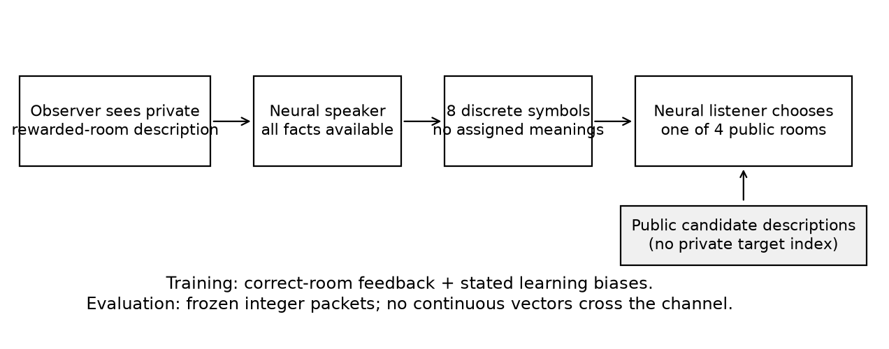
The grammar grid is a 13 x 13 array. The collector starts at (6,6); four destination cells are (1,1), (11,1), (1,11) and (11,11). Each destination displays a scene description. Only the observer knows which description identifies the rewarded destination. The observer is a stationary information source rather than a second navigating body.
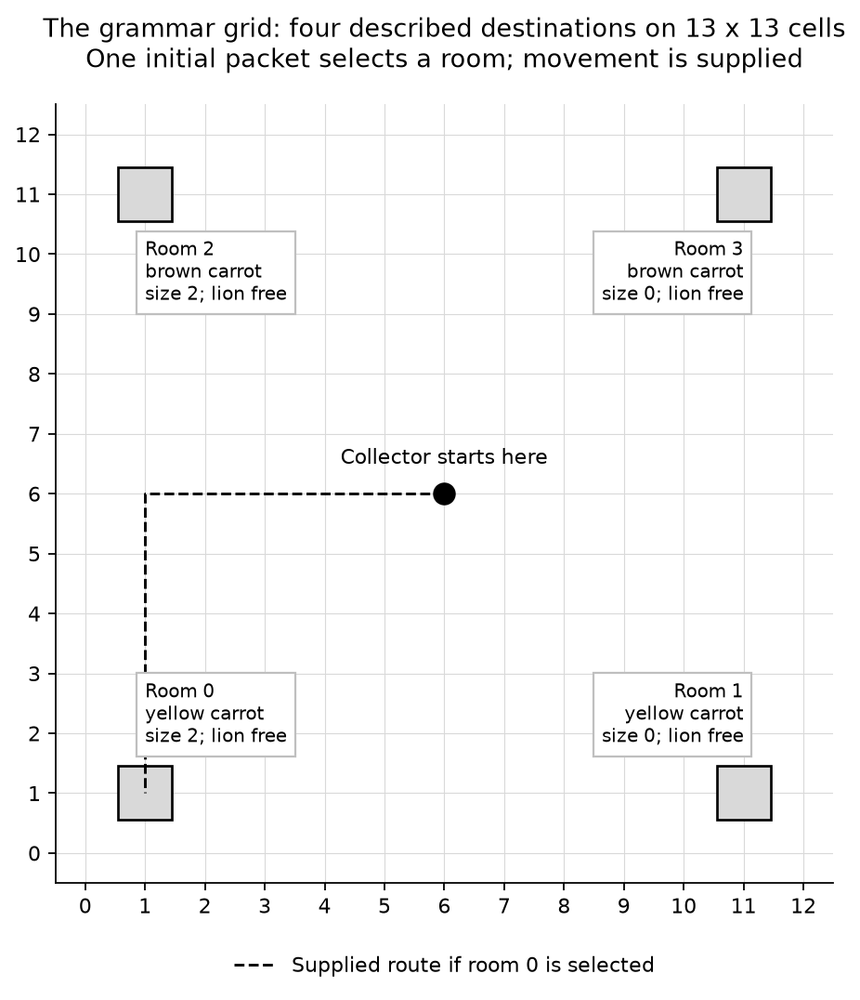
At reset, the sampler chooses a public set of four scenes and a private target. The observer receives the target scene features, not the target room index or the public candidate arrangement. The collector receives the four candidate scenes and the discrete packet, not the private target, sender activations, or sender gradients at evaluation. It chooses one room. Correct selection gives game reward 1; an incorrect selection gives 0. The PPO arm also includes the stated communication and constant action costs.
Movement is a supplied cardinal route: move along x until aligned with the chosen destination, then along y. Each route takes ten moves. The collector does not learn locomotion, obstacle avoidance or path planning in this new grid game. A training example is one initial-message/room-choice episode, not one physical movement timestep. There is no continuous stream of movement commands.
Food and animal states provide the semantic theme. In these new reference games, a free lion or tiger is a described scene property; it does not itself trigger a grid collision penalty. A correct room description remains the target even if it includes an active animal. Actual food bonuses and hazard penalties are reinstated in the MuJoCo transfer. Thus the grid result establishes description-based coordination, not newly learned hazard avoidance.
batch = game.sample(batch=256, partition='train') packet = speaker(batch['private'], mode='gumbel') logits = listener(batch['candidates'], wire=packet['wire']) loss = cross_entropy(logits, batch['target']) # After choosing a room, grid_execute(room) supplies its path.
A fact is one categorical component of a scene, such as food kind=apple, colour=red, size=2, animal=tiger, or state=free. It is not an English proposition supplied as a training sentence. Categorical values enter as one-hot perceptual features. All logical states in this report means the finite Cartesian product of these categories; the evaluation can enumerate this product, but training is explicitly barred from held-out states.
| Task | Components | All / train / held out |
|---|---|---|
| Attributes | 8 food kinds; 8 colours; 4 sizes; 2 animal identities; 2 cage states | 1,024 / 768 / 256 |
| Spatial binding | Two distinct objects: each 6 types, 4 colours, 2 conditions; 2 orientations | 4,512 / 3,360 / 1,152 |
Attribute food kinds are apple, berries, grain, mushroom, banana, bread, carrot and nuts. Colours are red, green, yellow, blue, purple, orange, white and brown. Sizes are four categorical bins. Animal is lion/tiger; cage state is caged/free. The private attribute observation is a 24-dimensional concatenated one-hot vector. Public candidates contain vectors in exactly the same format.
For the attribute task, training excludes every scene for which (colour - food_kind) modulo 8 is 1 or 4. Every individual food, colour, size and hazard value occurs during training; the excluded food/colour associations do not. The development experiments used a different split offset, 2, and seed 97. Final experiments use offset 1 and seeds 0-4.
The binding task places two distinct objects left/right or below/above one another. Types are apple, berries, grain, mushroom, lion and tiger. Each has four colours and a binary condition, interpreted as available/unavailable for food or active/inactive for an animal. Each object vector contains type, colour, condition and its two physical coordinates: 14 features. A zero-padded third object slot supports later three-object evaluation. These are within-scene relative coordinates, distinct from the four destination cells on the global grid. The descriptions are symbolic maps, not simulated animal bodies occupying grid cells. The object encoder shares parameters and sums over objects, so array ordering cannot stand in for spatial meaning.
For binding, the held-out rule is (colour_A - colour_B) modulo 4 = 1. Reversing the objects in a held-out scene gives a training scene with difference 3. Both object roles and every primitive value occur in training. This creates a demanding test: the same objects must be bound to the correct physical locations in a combination the sender never saw as a training target. Identical object pairs are excluded, leaving 4,512 meanings.
held_attributes = ((colour - food_kind) % 8 == 1) | \
((colour - food_kind) % 8 == 4)
held_binding = ((colour_A - colour_B) % 4 == 1)
# Neither held-out target set enters optimization.Candidate sets are complete rectangles in two categorical dimensions. For example, select two food kinds and two colours, hold other attributes fixed, and display all four combinations. All four candidates must be valid and in the same train/test partition. Candidate order is shuffled. A source that does not know which two dimensions the current public set varies must preserve information across many possible contexts.
Every sampled candidate set is repeated four times, once with each member as the target. Public inputs are identical across those four episodes. Therefore a deterministic listener receiving a constant packet can get exactly one of the four right: 25%. This is a stronger control than assuming that a vaguely blind receiver has no useful prior. Repeating the same contexts also permits paired message interventions without changing task difficulty.
Binding training mixes approximately 20% single-object episodes so individual object values and all five physical coordinate cells, including the centre, are familiar. The curriculum arm first emphasizes simpler scenes. No three-object scenes enter any main-model training run. The later three-object test introduces a novel cardinality, not a novel basic colour or coordinate.
Recurrent speakers encode the whole scene into a width-96 state and emit up to eight payload symbols from an eight-symbol alphabet, plus an end marker. A shared GRU and shared output layer generate every word. Learned position embeddings distinguish steps but carry no supplied semantic labels. The private scene context is available at every step. During an initial warmup, EOS is disabled; normal greedy evaluation has no minimum-length constraint.
The recurrent listener reads the whole packet using a GRU. It compares the resulting message vector against a whole-scene embedding for each public candidate using cosine scores scaled by 20. The basic recurrent methods jointly learn candidate perception. Perceptually anchored methods instead retain all public perceptual distinctions through a fixed random isometry; this is a meaningful representation bias and is disclosed as such.
The unassigned-slot control uses a neural scene encoder followed by one global linear layer producing eight categorical distributions. Every output slot sees the entire scene embedding. The listener embeds all eight symbols, concatenates their embeddings, and uses a neural sentence encoder to score whole scenes. There is no assignment such as position 1=food or position 4=hazard. This architecture nevertheless supplies a fixed positional channel. Its payload length is always eight, so its length penalty is constant and cannot demonstrate learned brevity or when-to-speak behaviour.
The forward channel is exactly discrete. During straight-through training a sampled one-hot symbol is used in the forward pass, while a soft relaxation supplies a biased backward gradient. At evaluation only integer token IDs cross the boundary. Tests verify exact equality between hard-wire and integer-token listener outputs, and verify that symbols after EOS cannot affect the listener.
soft = gumbel_softmax(logits, tau=temperature, hard=False) hard = one_hot(soft.argmax(-1), vocab + 1).float() wire = hard + (soft - soft.detach()) # Forward wire entries are exactly 0 or 1. # Backward gradients are a biased surrogate, not sampled RL.
Let x denote the private target scene, C the four public candidates, y the correct room, m the discrete packet, and L its payload length. The listener policy is a softmax over candidate scene similarity. The ordinary differentiable game minimizes correct-room cross-entropy, with a length cost when applicable. Anchored reconstruction variants additionally encourage the message representation to retain the entire scene, not just whichever distinction a particular candidate set happens to require.
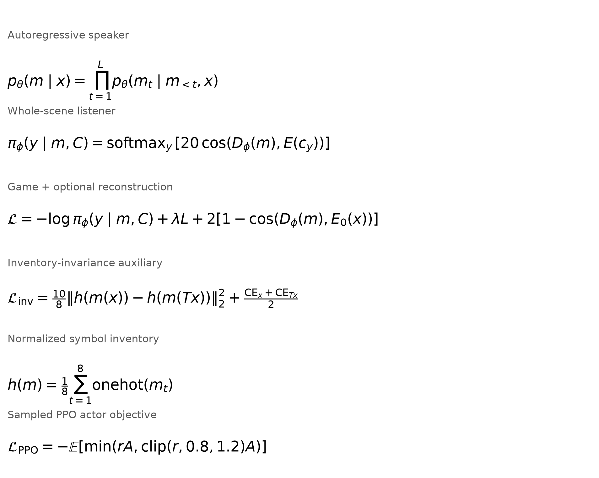
| Method | What is different | Final runs |
|---|---|---|
| Sampled PPO | Sample message and room; optimize team reward using a centralized value baseline and two clipped epochs. | 5 seeds x 2 tasks |
| Recurrent Gumbel | Joint discrete-channel cross-entropy; no length cost. | 5 x 2 |
| Curriculum | Simple distinctions/single objects first; then full training task, with a ramped length cost. | 5 x 2 |
| Iterated learning | Four fresh generations, 1,500 updates each. A new speaker also imitates 128 training meanings from the preceding speaker, not supplied English. | 5 x 2 |
| Population | Three speakers and three listeners, random pairings. Evaluate all nine pairings; equal total interactions. | 5 x 2 |
| Unassigned slots | Fixed eight-position global neural channel; anchored perception and whole-scene reconstruction. | 5 x 2 |
| Inventory invariance | Unassigned slots plus training-only role reversals: preserve token inventory while distinguishing roles. | 5 binding seeds |
A central PPO critic can see private training information to reduce variance; the receiver policy cannot. PPO uses reward 1{room correct} - 0.01 - lambda*L, clipping 0.8-1.2, value coefficient 0.5 and entropy coefficient 0.005. This PPO arm is a one-step cooperative contextual bandit with an autoregressive message, not a multi-step navigation PPO experiment. Other main methods use straight-through Gumbel cross-entropy, not PPO. Communication is jointly optimized because receiver loss reaches the sender through the differentiable surrogate; this is different from learning solely from episodic environmental reward.
In the PPO expression, r is the current joint message/action likelihood divided by its rollout likelihood, and A is the standardized reward-minus-value advantage. The Gumbel temperature decreases from 1.0 to 0.5. The nonzero length coefficient ramps to 0.02 after the EOS warmup; it has no effect on the fixed-length slot methods.
Whole-scene reconstruction adds twice the cosine distance between the message vector and the fixed scene embedding. The attention pilot lets a speaker learn soft attention over observed fact/object units, without fixed word assignments. The anchoring and attention pilots are reported as exploratory experiments rather than additional five-seed final comparisons.
Inventory invariance adds a histogram consistency cost for a scene x and its role-reversed counterpart T(x). The identity and colour of each object remain the same; physical positions exchange. A two-candidate loss simultaneously requires the listener to distinguish x from T(x). Only transformations for which BOTH scenes are in training are permitted. The extra examples are counted and retained. This supplies a content/order separation bias; it does not make an unbiased claim that syntax appeared without an inductive bias. It also receives more auxiliary scene exposures than the plain slot control, so performance differences are not a clean equal-compute comparison.
The protocol was frozen after development seed 97 and before any final seed began. All main models use width 96, Adam learning rate 0.001, batch size 256 and 6,000 updates: 1,536,000 primary room-choice episodes per run. There are 65 final runs, or 99,840,000 primary examples. PPO uses two optimizer epochs per batch; population members share a total interaction budget; iterated learning divides it among generations. These distinctions preclude calling optimizer effort exactly matched.
Each final run evaluates the final checkpoint only. There are no retries, seed filters, admission checks, early stopping, or best-generation selection. The normal, blocked, shuffled, sorted, reversed and vocabulary-permuted arms use the same 4,096 paired cases per train/test partition. Population results average all nine pairings. Language diagnostics always use member 0, not the best-performing member.
| Claim tested | Rule fixed before final seeds |
|---|---|
| Useful communication | Held-out mean >=80%, worst seed >=65%; normal exceeds blocked and shuffled by >=30 points. |
| Strong combination generalization | Held-out mean >=95% and worst seed >=90%. |
| Local symbolic productivity | Training-only fragment edits succeed on >=80% of evaluated held-out changes, including coverage. |
| Order-sensitive role binding | Every seed has >=50 identical-bag/different-order pairs; >=90% interpreted correctly both ways normally; <=55% both correct after sorting. |
| New object cardinality | Three-object accuracy mean >=80%, worst seed >=65%. |
The thresholds are operational study criteria, not universal definitions of grammar. Reported 95% t intervals use the five independent training seeds (displayed bounds are clipped to 0-100%), with t(4)=2.776. Thousands of paired episodes within a seed do not count as thousands of independent trained agents. The selected combination split is still one final split; results should be replicated with additional split offsets before broad generalization claims.
Attributes task. All blocked scores are exactly 25%. Seed ranges show training variability.
| Method | Train | Held out | Seed range | Shuffled | Sorted | Useful? |
|---|---|---|---|---|---|---|
| Sampled PPO | 96.9% | 94.9% | 91.1%-98.3% | 24.6% | 55.8% | yes |
| Recurrent Gumbel | 68.5% | 66.0% | 48.4%-79.1% | 24.9% | 62.5% | no |
| Curriculum | 62.1% | 58.3% | 30.6%-81.1% | 25.0% | 53.0% | no |
| Iterated learning | 60.5% | 57.3% | 41.5%-73.4% | 24.8% | 41.4% | no |
| Population | 68.9% | 63.4% | 46.2%-73.9% | 24.9% | 62.3% | no |
| Unassigned slots | 99.8% | 90.6% | 83.6%-96.9% | 25.2% | 33.5% | yes |
Binding task. All blocked scores are exactly 25%. Seed ranges show training variability.
| Method | Train | Held out | Seed range | Shuffled | Sorted | Useful? |
|---|---|---|---|---|---|---|
| Sampled PPO | 92.3% | 92.6% | 89.5%-95.3% | 25.1% | 57.1% | yes |
| Recurrent Gumbel | 48.0% | 49.3% | 25.0%-75.3% | 25.2% | 48.0% | no |
| Curriculum | 42.2% | 43.3% | 25.0%-66.6% | 25.1% | 37.6% | no |
| Iterated learning | 90.6% | 88.7% | 74.8%-94.1% | 25.4% | 72.4% | yes |
| Population | 70.9% | 70.6% | 60.5%-87.6% | 24.6% | 65.8% | no |
| Unassigned slots | 88.7% | 98.8% | 97.9%-99.7% | 24.7% | 33.3% | yes |
| Inventory invariance | 93.4% | 96.6% | 91.1%-99.8% | 24.6% | 30.4% | yes |
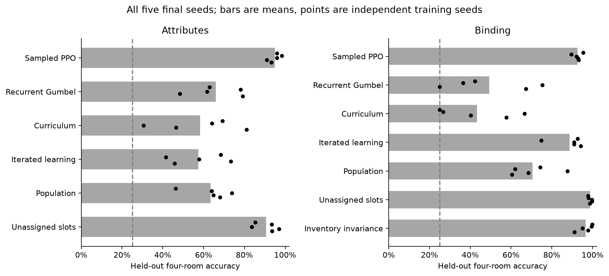
Unassigned slots, attributes: held-out 90.6%; five-seed 95% t interval [83.4%, 97.7%]. Useful-communication criterion: met. Strong-combination criterion: not met.
Unassigned slots, binding: held-out 98.8%; five-seed 95% t interval [97.7%, 99.9%]. Useful-communication criterion: met. Strong-combination criterion: met.
Inventory invariance, binding: held-out 96.6%; five-seed 95% t interval [92.1%, 100.0%]. Useful-communication criterion: met. Strong-combination criterion: met.
Sampled PPO also learns effective communication: 94.9% on attributes and 92.6% on binding. This is positive evidence for neural reward-driven communication learning in the one-step game, not only differentiable-channel learning. Its grammar probes still fail the stated criteria, and it is not an end-to-end MuJoCo language/motor training result.
Iterated learning helps binding in this comparison (88.7% versus 49.3% for the ordinary recurrent Gumbel model), but does not help the attribute task (57.3% versus 66.0%). Curriculum and population do not meet the useful-communication criterion here. These are outcomes under this finite budget and these implementations, not claims that those methods cannot work.
High room accuracy does not require a unique packet for every logical meaning. The public candidate set supplies side information: H(target | candidates) = log2(4) = 2 bits in the balanced game, even though a complete scene has many more possibilities. Different scenes can share a packet and still be distinguishable in most sampled contexts. Such collisions help explain why successful four-way communication need not support universal scene decoding or transfer to sixteen hypotheses.
The main causal conclusion is restricted to these tasks: private target information carried by the learned packet improves receiver choice. Blocking or swapping packets damages performance. This rules out a purely silent public-observation policy for the paired grid task. It does not by itself reveal a vocabulary, a grammatical production rule, or human-like understanding.
Sorting any arbitrary positional password can break it. Therefore an accuracy drop after reversing or sorting all packets is not sufficient evidence of grammar. The stronger binding probe takes a held-out scene and its training role-reversed counterpart. They contain the same objects but assign them to opposite physical locations. The receiver sees the same two public alternatives for both targets.
We retain cases where the two naturally generated messages contain exactly the same multiset of symbols but occur in a different order. If the receiver gets both targets right, their difference must be carried by order, not by the presence of a special extra token. Sorting makes their packets identical, so a deterministic listener cannot get both right. This is a causal demonstration of order-dependent role information within a finite code. At minimum, order carries the one-bit distinction between two role assignments. A permutation code can satisfy this test without having noun phrases, a reusable subject-verb-object rule, or hierarchical grammar; those stronger interpretations are not licensed by this result.
| Seed | Plain slots: same-bag pairs | Invariance: same-bag pairs | Both correct | After sorting |
|---|---|---|---|---|
| 0 | 7 | 115 | 115 | 0 |
| 1 | 2 | 102 | 102 | 0 |
| 2 | 6 | 13 | 13 | 0 |
| 3 | 1 | 32 | 30 | 0 |
| 4 | 6 | 146 | 146 | 0 |
All 1,152 held-out role pairs per seed are evaluated before selecting the identical-bag subset. Ordinary role-pair accuracy is 97.9% for plain slots and 98.8% for inventory invariance. The invariant model naturally produces identical-bag/different-order packets for 7.1% of these pairs. The narrower order conclusion applies to this observed subset, not to every possible meaning.
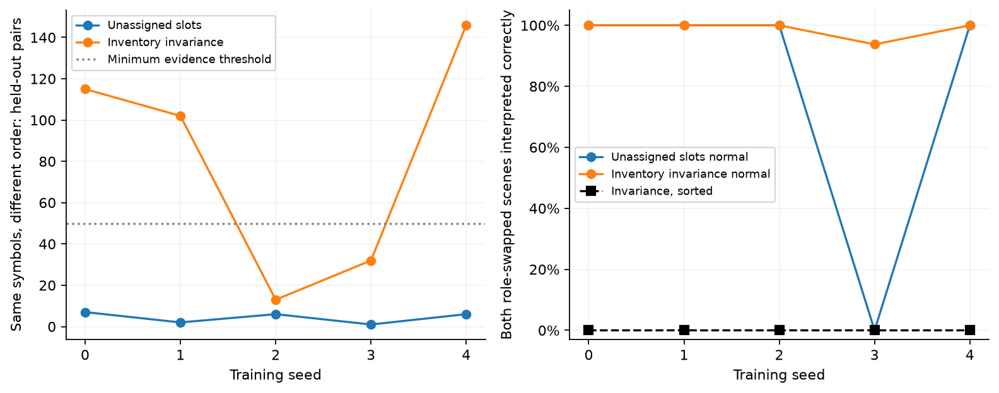
Preregistered order-binding criterion: not met across all five seeds. The table still shows any partial evidence; a failing seed is retained.
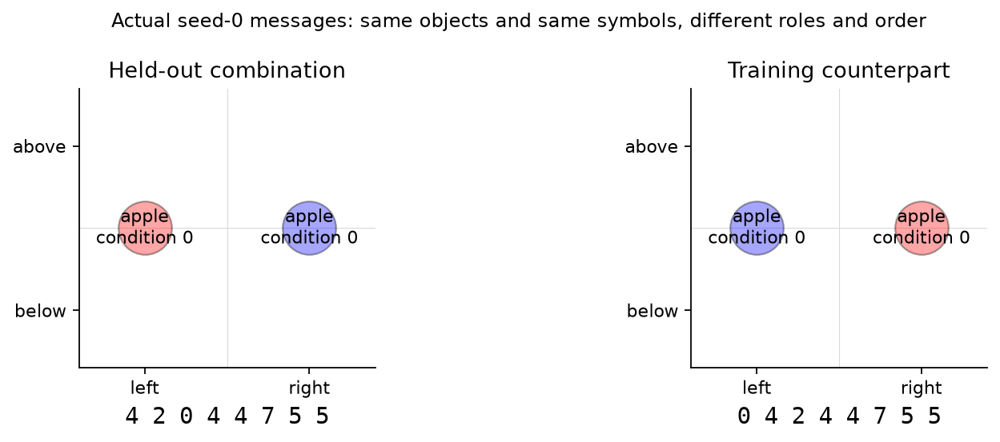
Example 1, first qualifying cases in preselected seed 0: held-out scene: red apple (condition 0) left; blue apple (condition 0) right. Counterpart: blue apple (condition 0) left; red apple (condition 0) right.
Held-out: 4 2 0 4 4 7 5 5 Counterpart: 0 4 2 4 4 7 5 5
Example 2, first qualifying cases in preselected seed 0: held-out scene: red apple (condition 0) left; blue tiger (condition 1) right. Counterpart: blue tiger (condition 1) left; red apple (condition 0) right.
Held-out: 4 2 0 6 5 7 5 3 Counterpart: 0 6 2 3 4 5 7 5
These packets are actual frozen-model outputs, not translations invented for illustration. A constant-inventory permutation code could also pass the role-order test; this probe does not establish that the symbol inventory itself is a lexical description of the objects. We do not label an individual symbol as apple, tiger or left unless a separate lexical test supports that assignment. All qualifying pairs, including mistakes, are retained as CSV files. These examples do not establish a context-independent word dictionary or a generative grammar extending beyond eight slots.
For context, the same role-choice and identical-bag diagnostics were run on every binding method. Pooled pair counts below are descriptive; they are not additional independent training seeds.
| Method | Role-choice mean | Same-bag pairs | Both correct | Order criterion |
|---|---|---|---|---|
| Sampled PPO | 74.3% | 314 | 131 | not met |
| Recurrent Gumbel | 65.4% | 22 | 4 | not met |
| Curriculum | 59.7% | 18 | 9 | not met |
| Iterated learning | 90.9% | 194 | 97 | not met |
| Population | 73.3% | 190 | 42 | not met |
| Unassigned slots | 97.9% | 22 | 21 | not met |
| Inventory invariance | 98.8% | 408 | 406 | not met |
The local-edit probe derives candidate symbolic substitutions only from training examples that differ in one categorical fact. It finds the most frequent changed contiguous fragment of at most three symbols, with support in at least three training contexts. It then tries that same substitution on held-out scene pairs. Success requires both an initially correct receiver choice and a switch to the intended counterfactual after the edit. Unsupported or inapplicable edits count against overall coverage. No held-out labels choose the rule. Failing this conservative fragment test does not prove that every possible distributed grammar is absent.
| Task / method | Edit coverage | Conditional switch | Overall switch | Fresh listener |
|---|---|---|---|---|
| attributes / Unassigned slots | 49.1% | 46.1% | 23.8% | 76.5% |
| binding / Unassigned slots | 57.0% | 40.3% | 23.0% | 82.7% |
| binding / Inventory invariance | 59.6% | 38.0% | 22.4% | 74.4% |
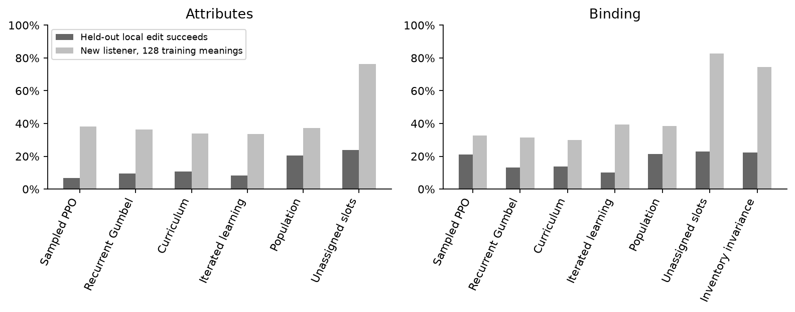
The fresh-listener probe trains a newly initialized anchored recurrent listener on 128 training meanings using the frozen speaker. It then tests held-out combinations. This measures learning under a specific architecture and budget; it is not a human language acquisition experiment. All methods use the same independent auditor architecture, so parallel codes are not evaluated using their original listener architecture.
The strong two-object slot model drops to 55.1% (seeds 51.9%-56.5%) with three objects; inventory invariance obtains 58.6% (seeds 56.0%-60.7%). No three-object scenes were used in main-model training. Both fail the stated new-cardinality criterion. This reveals an important boundary: successful unseen combinations at fixed object count are easier than extension to a more complex scene. The three-object probe also changes co-occurrence and candidate contexts; it is not a perfectly isolated causal manipulation of count alone.
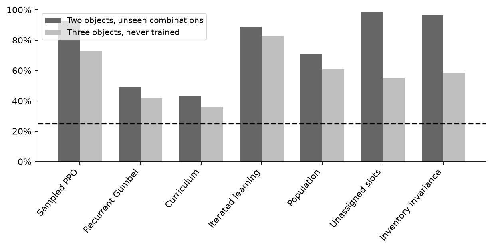
The slot channel has 8^8 = 16,777,216 possible messages, or 24 payload bits, while the binding task has only 4,512 meanings. It therefore has enough capacity for a large holistic code. Neither a discrete channel nor successful held-out combinations alone forces a minimal or human-like grammar.
Topographic similarity correlates Hamming distance between facts with edit distance between packets over 12,000 fixed random pairs. Position/fact mutual information and code entropy are also retained. These are descriptive diagnostics: a holistic code can have some geometric regularity, and fixed positional channels can inflate apparent disentanglement. They do not substitute for causal edits or held-out interpretation.
| Task / method | Unique messages | Topographic rho | Mean length |
|---|---|---|---|
| attributes / Unassigned slots | 941 | 0.518 | 8.00 |
| binding / Unassigned slots | 1241 | 0.489 | 8.00 |
| binding / Inventory invariance | 2353 | 0.451 | 8.00 |
The attribute slot method was chosen for transfer using development seed 97 before the final runs. All five final seeds were transferred; the best seed was not selected. The binding/invariance syntax method was not transferred because its two-object scene representation does not match the existing arena protocol interface. Therefore the strongest order-binding evidence in this report is grid-only.
The unchanged arena includes four food candidates, lion/tiger gate hazards and three supplied public routes. The frozen receiver chooses motor actions using the existing NVIDIA-trained neural PPO navigator. It uses inherited kinematic movement and mujoco.mj_forward, with swept wall and hazard checks. This is genuine execution in the existing MuJoCo arena, but it is not torque-driven locomotion or visual perception.
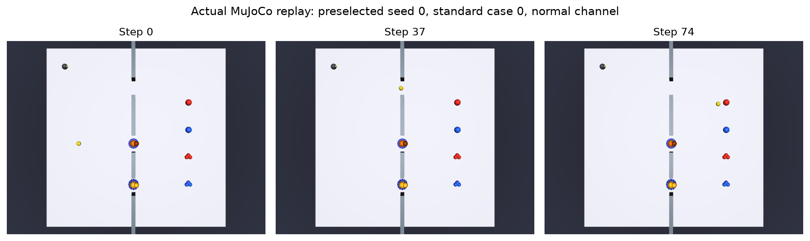
To use the whole-message listener without adding fact-specific decoder heads, the bridge builds 16 public hypotheses: four food candidates times two animal identities times two cage states. Size is fixed at 0. Each hypothesis is a complete scene, and the frozen listener scores it. Summed posterior probability selects a food; hazard probabilities and supplied route lengths determine a route utility. This 4-to-16 candidate change is an additional distribution shift beyond the training game. No new token dictionary, checkpoint tuning or motor training was used.
hypotheses = public_food_candidates x animal_ids x cage_states
posterior = softmax(listener(hypotheses, tokens=message))
food = argmax(sum_over_hazard_states(posterior))
route = argmax(expected_food_bonus - expected_hazard_penalty
- expected_movement_cost)
# Frozen PPO navigator executes supplied waypoints in MuJoCo.The common subdomain has four food kinds and four colours, not the grid model's full eight-by-eight vocabulary, plus two animals and two states: 64 private meanings. Under the new attribute split, only 12 of these meanings are held out (three food/colour pairs times four hazard combinations). Four contexts per meaning give 256 episodes per seed, family and condition; 48 are held out. There are five seeds, standard/transformed geometry, and normal/blocked/shuffled/sorted/oracle arms: 12,800 actual arena episodes. Messages have 24 payload bits; blocked/oracle arms are charged zero communication bits.
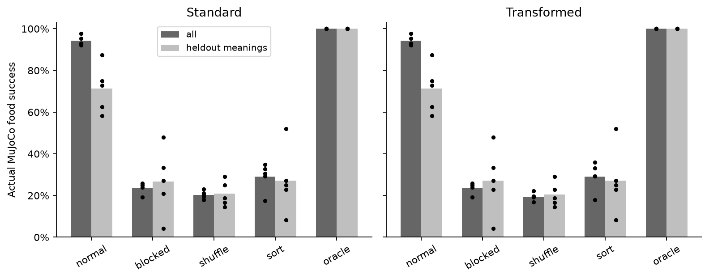
| Geometry / arm | All success | Held-out success | Held-out hazard |
|---|---|---|---|
| standard / normal | 94.2% | 71.2% | 0.0% |
| standard / blocked | 23.8% | 26.7% | 2.5% |
| standard / shuffle | 20.3% | 20.8% | 24.2% |
| standard / sort | 29.0% | 27.1% | 13.3% |
| standard / oracle | 100.0% | 100.0% | 0.0% |
| transformed / normal | 94.2% | 71.2% | 0.0% |
| transformed / blocked | 23.8% | 27.1% | 2.9% |
| transformed / shuffle | 19.5% | 20.4% | 23.8% |
| transformed / sort | 29.1% | 27.1% | 14.2% |
| transformed / oracle | 100.0% | 100.0% | 0.0% |
The independent logical-outcome audit finds 0 execution errors and 0 timeouts among 12,800 episodes. The preserved motor interface therefore realizes the selected decisions accurately in this check. Errors in target selection or hazard beliefs remain communication/interface failures, not evidence that MuJoCo physics itself invalidates communication. The audit independently recomputes logical food/route outcomes, but does not independently reconstruct swept geometry or full trajectories for this new transfer.
An additional exploratory check was specified after the primary transfer, with all five seeds retained. It changes one private hazard fact, regenerates the entire packet, and reevaluates the frozen decision layer on the original scene. Among actually-free cases, truthful messages select hazardous routes 0.0% of the time; falsely describing the animal as caged raises this to 23.0%, and changing the animal identity raises it to 65.6%. Food accuracy stays near 94.4%-95.9%. Hazard information therefore affects route decisions, without assigning a hazard word position. These are logical decision outcomes, NOT additional executed MuJoCo episodes, and they are not a preregistered primary result.
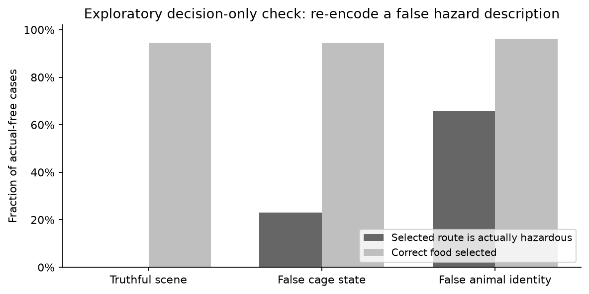
The oracle provides the actual target/status to the decision layer and serves as a motor ceiling. Blocking and shuffling are channel controls, not independently retrained no-message baselines in this new transfer. The grid has an exact balanced 25% blocked reference; the sampled MuJoCo contexts do not impose that exact equality. Both distinctions matter when comparing percentages.
Development used seed 97 and split offset 2, not the final seed/split set. Several architectures failed through immediate EOS, repeated-symbol packets, poor generalization, or co-adaptation of the learned scene encoder. We added an EOS warmup, persistent scene context, position embeddings, perceptual anchoring, attention and whole-scene reconstruction while developing the final study. Those adjustments were completed before final training. The pilots are exploratory and must not be pooled as extra independent final seeds.
| Retained development run | Task | Updates | Held-out pilot | Seconds |
|---|---|---|---|---|
| attributes_anchored_cpu97_2400 | attributes | 2400 | 40.1% | 49.5 |
| attributes_gumbel_cpu97 | attributes | 800 | 40.0% | 17.7 |
| attributes_gumbel_cpu97_2400 | attributes | 2400 | 64.8% | 57.1 |
| binding_anchored_cpu97_2400 | binding | 2400 | 45.4% | 51.6 |
| binding_curriculum_cuda97_800 | binding | 800 | 25.0% | 19.4 |
| v2_attributes_anchored_97_6000 | attributes | 6000 | 64.9% | 142.9 |
| v2_attributes_gumbel_97_6000 | attributes | 6000 | 30.7% | 162.9 |
| v2_binding_anchored_97_6000 | binding | 6000 | 68.4% | 148.3 |
| v2_binding_curriculum_97_6000 | binding | 6000 | 54.7% | 171.4 |
| v3_attributes_attention_97_6000 | attributes | 6000 | 66.5% | 237.7 |
| v3_attributes_parallel_97_6000 | attributes | 6000 | 91.0% | 38.2 |
| v3_attributes_reconstruction_97_6000 | attributes | 6000 | 72.3% | 195.8 |
| v3_binding_attention_97_6000 | binding | 6000 | 70.3% | 244.0 |
| v3_binding_invariance_97_6000 | binding | 6000 | 93.2% | 77.3 |
| v3_binding_parallel_97_6000 | binding | 6000 | 98.8% | 42.9 |
| v3_binding_reconstruction_97_6000 | binding | 6000 | 54.3% | 203.3 |
Architecture version 1 used only the initial recurrent context; version 2 supplied context each step and introduced the EOS warmup. Version 3 adds learned step positions; the parallel/invariance controls use the explicitly different fixed-slot architecture. Whole-scene reconstruction or attention alone did not ensure a good code in the retained pilots. The fixed-slot control learned more reliably here, but its architectural differences prevent attributing the improvement to one isolated mechanism.
The machine has an NVIDIA GeForce RTX 4060 Ti. Experiment environment: Python 3.11.9, torch 2.14.1+cu130, NumPy 2.4.6, MuJoCo 3.17.0. The tiny grid networks were trained with one CPU thread per run, scheduling six independent jobs concurrently; the GPU was used for frozen MuJoCo motor inference. This is not a controlled CPU-versus-GPU benchmark. Parallel trials and recurrent trials have very different runtimes.
| Task / method | Mean training seconds | Seed range seconds |
|---|---|---|
| attributes / Unassigned slots | 38.5 | 38.0-38.7 |
| binding / Unassigned slots | 45.4 | 45.2-45.5 |
| binding / Inventory invariance | 83.2 | 80.5-85.5 |
| attributes / Sampled PPO | 454.9 | 442.4-465.8 |
| binding / Sampled PPO | 516.9 | 514.0-519.8 |
Final grid training plus audits/evaluations completed in 41.1 wall-clock minutes under this concurrent schedule. The separate 12,800-episode MuJoCo check took 3.0 minutes. Per-run training times exclude that run's detailed evaluation and startup overhead; concurrent scheduling changes these measurements. They are not predictions for end-to-end visual MuJoCo training.
Verification: 198 tests passed with MUJOCO_GL=glfw on Windows. These include the preserved environment/communication tests and 23 new checks for train/test separation, counterbalanced targets, exact discrete wires, EOS masking, PPO replay, object-array invariance, coordinate sensitivity, supplied routes and training-only role transformations. The same 198 tests also pass from a separate source-only bundle copy, confirming that required project files are included. The first whole-suite invocation inherited an unsupported egl backend and failed during collection; setting the Windows GLFW backend resolved that configuration error.
A separate retained-artifact audit verifies all 65 intended final runs, final update numbers, finite weights/losses, exact frozen source hashes, and exact 25% blocked grid performance. It replays same-bag role pairs directly from saved codebooks and frozen listeners, agreeing with the evaluator. Every final checkpoint and optimizer state is retained in the download archive. No failed final seed was discarded.
Supported: neural agents can learn useful discrete communication without manually assigning semantic roles to individual output positions. In the strong binding slot model, this generalizes to held-out combinations. With an explicit inventory-invariance bias, some finite messages carry spatial-role information through order, tested using equal-symbol-inventory contrasts. This is stronger than simply displaying interpretable-looking message strings.
Not established: human language, an English-like vocabulary, productive morphology, unbounded grammar, recursion, multi-turn pragmatics, spontaneous decisions about when communication is needed, or visual/end-to-end embodied language acquisition. The successful fixed-slot method always sends eight symbols at episode start. The fixed perceptual representation and invariance objective supply strong biases. Local-edit and three-object tests expose limits, and the new MuJoCo transfer is not yet reliably correct on the held-out subdomain.
The most useful next experiment is to train the same unassigned protocol on variable object counts and variable-length packets, then test a higher unseen count and held-out relations. An explicit minimal-pair evaluation should continue to separate lexical content from spatial roles. A second controlled comparison should ablate the invariance regularizer, role-contrast examples and total auxiliary training exposures independently; the present plain-slot contrast changes several things together.
For embodiment, first train the communication game against the actual 16-hypothesis arena decision interface while keeping motors and exact observations fixed. Hold out complete scenes and compare normal/blocked/shuffled communication before introducing images. Transfer the binding representation only after the arena exposes matching multi-object relations. Then add vision and joint motor/language reinforcement learning in separate steps. This preserves an identifiable explanation when a later integration fails.
The accompanying ZIP contains source, the frozen protocol, full final checkpoints including optimizer states, all training curves, evaluations, codebooks, development runs, new MuJoCo episode records and scene descriptions, independent audits, the existing navigator inference weights, figures and this report. The preserved baseline reports remain available in the repository under results/communication_research. The original arena asset and environment source required for replay are included in the bundle; inspect README.md at the archive root for command locations.
# In the bundled project folder, with the experiment environment active: $env:MUJOCO_GL = 'glfw' python -m experiments.spontaneous_grammar.study ` --protocol ../protocol.json --output ../new_study --workers 6 python -m experiments.spontaneous_grammar.arena_transfer ` --study ../new_study --output ../new_transfer python -m pytest tests -q -p no:cacheprovider
Use new output directories: the runners intentionally refuse to overwrite existing study runs. The JSON protocol records frozen source hashes and exact evaluation criteria. The CSV all-seeds.csv and per-model evaluation.json files provide the numbers behind every result table. Small inference-only communication weights for all final models are also stored separately for inspection without optimizer loading.
Ren et al. (2020), Compositional Languages Emerge in a Neural Iterated Learning Model, https://arxiv.org/abs/2002.01365. Motivation for transmitting a learned code through fresh learners; this study is not an exact reproduction.
Chaabouni et al. (2020), Compositionality and Generalization in Emergent Languages, https://aclanthology.org/2020.acl-main.407/. Motivation for testing generalization separately from compositionality diagnostics.
Lazaridou et al. (2018), Emergence of Linguistic Communication from Referential Games with Symbolic and Pixel Input, https://arxiv.org/abs/1804.03984. Context for neural referential games and the distinction between symbolic and perceptual input.
Attributes: normal/blocked/shuffled performance uses paired frozen-model cases; all blocked results are 25%.
| Method | Seed | Held out | Shuffled | Local edit | Three objects |
|---|---|---|---|---|---|
| Curriculum | 0 | 69.3% | 25.2% | 10.4% | - |
| Curriculum | 1 | 64.1% | 24.0% | 15.9% | - |
| Curriculum | 2 | 30.6% | 24.9% | 9.3% | - |
| Curriculum | 3 | 46.4% | 25.1% | 11.0% | - |
| Curriculum | 4 | 81.1% | 25.7% | 7.0% | - |
| Recurrent Gumbel | 0 | 62.9% | 25.9% | 5.9% | - |
| Recurrent Gumbel | 1 | 78.1% | 25.1% | 6.0% | - |
| Recurrent Gumbel | 2 | 61.7% | 24.9% | 14.7% | - |
| Recurrent Gumbel | 3 | 48.4% | 24.5% | 11.1% | - |
| Recurrent Gumbel | 4 | 79.1% | 24.1% | 10.4% | - |
| Iterated learning | 0 | 68.4% | 25.6% | 5.2% | - |
| Iterated learning | 1 | 41.5% | 25.3% | 17.5% | - |
| Iterated learning | 2 | 57.8% | 23.8% | 5.9% | - |
| Iterated learning | 3 | 73.4% | 24.7% | 7.5% | - |
| Iterated learning | 4 | 45.7% | 24.6% | 4.8% | - |
| Unassigned slots | 0 | 85.3% | 25.4% | 17.1% | - |
| Unassigned slots | 1 | 93.4% | 24.5% | 11.7% | - |
| Unassigned slots | 2 | 83.6% | 25.3% | 47.4% | - |
| Unassigned slots | 3 | 96.9% | 24.8% | 12.4% | - |
| Unassigned slots | 4 | 93.6% | 25.8% | 30.3% | - |
| Population | 0 | 46.2% | 24.7% | 33.6% | - |
| Population | 1 | 63.9% | 24.9% | 15.2% | - |
| Population | 2 | 73.9% | 24.7% | 13.5% | - |
| Population | 3 | 64.8% | 24.8% | 14.3% | - |
| Population | 4 | 68.0% | 25.1% | 25.4% | - |
| Sampled PPO | 0 | 96.0% | 25.4% | 0.0% | - |
| Sampled PPO | 1 | 98.3% | 24.2% | 1.9% | - |
| Sampled PPO | 2 | 95.9% | 25.4% | 1.6% | - |
| Sampled PPO | 3 | 91.1% | 24.3% | 15.3% | - |
| Sampled PPO | 4 | 93.2% | 23.8% | 14.3% | - |
Binding: normal/blocked/shuffled performance uses paired frozen-model cases; all blocked results are 25%.
| Method | Seed | Held out | Shuffled | Local edit | Three objects |
|---|---|---|---|---|---|
| Curriculum | 0 | 25.0% | 25.0% | 0.0% | 25.0% |
| Curriculum | 1 | 26.7% | 25.0% | 20.0% | 25.3% |
| Curriculum | 2 | 66.6% | 25.2% | 29.9% | 55.0% |
| Curriculum | 3 | 40.3% | 24.9% | 11.0% | 33.1% |
| Curriculum | 4 | 57.6% | 25.3% | 7.7% | 43.5% |
| Recurrent Gumbel | 0 | 42.3% | 25.0% | 19.1% | 33.3% |
| Recurrent Gumbel | 1 | 36.5% | 24.9% | 14.5% | 28.9% |
| Recurrent Gumbel | 2 | 75.3% | 25.2% | 13.6% | 68.1% |
| Recurrent Gumbel | 3 | 25.0% | 25.0% | 0.0% | 25.0% |
| Recurrent Gumbel | 4 | 67.2% | 25.8% | 19.4% | 53.1% |
| Inventory invariance | 0 | 99.8% | 24.4% | 22.0% | 58.4% |
| Inventory invariance | 1 | 99.6% | 25.1% | 22.5% | 59.2% |
| Inventory invariance | 2 | 95.0% | 24.2% | 24.4% | 60.7% |
| Inventory invariance | 3 | 97.8% | 24.3% | 22.7% | 56.0% |
| Inventory invariance | 4 | 91.1% | 24.7% | 20.4% | 58.6% |
| Iterated learning | 0 | 92.6% | 26.6% | 8.2% | 88.7% |
| Iterated learning | 1 | 74.8% | 24.5% | 16.9% | 66.4% |
| Iterated learning | 2 | 91.0% | 25.8% | 4.0% | 88.5% |
| Iterated learning | 3 | 91.0% | 25.1% | 12.9% | 84.6% |
| Iterated learning | 4 | 94.1% | 25.0% | 8.3% | 85.9% |
| Unassigned slots | 0 | 97.9% | 25.0% | 22.9% | 56.0% |
| Unassigned slots | 1 | 98.0% | 25.6% | 24.1% | 56.5% |
| Unassigned slots | 2 | 99.7% | 24.4% | 19.9% | 54.5% |
| Unassigned slots | 3 | 99.7% | 24.5% | 20.3% | 56.5% |
| Unassigned slots | 4 | 98.6% | 24.2% | 28.0% | 51.9% |
| Population | 0 | 74.2% | 24.8% | 28.0% | 62.3% |
| Population | 1 | 62.1% | 24.6% | 33.1% | 53.1% |
| Population | 2 | 87.6% | 24.3% | 11.8% | 77.5% |
| Population | 3 | 68.4% | 24.4% | 15.9% | 58.6% |
| Population | 4 | 60.5% | 25.1% | 18.8% | 51.4% |
| Sampled PPO | 0 | 95.3% | 25.2% | 8.9% | 79.5% |
| Sampled PPO | 1 | 89.5% | 25.6% | 22.3% | 44.0% |
| Sampled PPO | 2 | 92.0% | 24.7% | 35.4% | 74.7% |
| Sampled PPO | 3 | 92.9% | 24.6% | 6.1% | 82.0% |
| Sampled PPO | 4 | 93.2% | 25.4% | 32.6% | 83.1% |